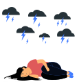
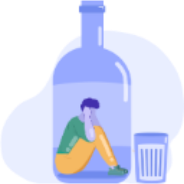
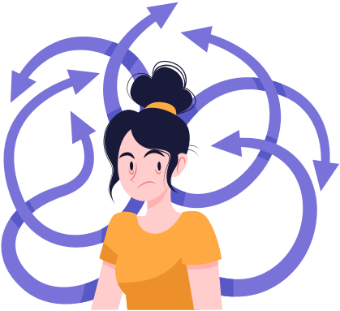
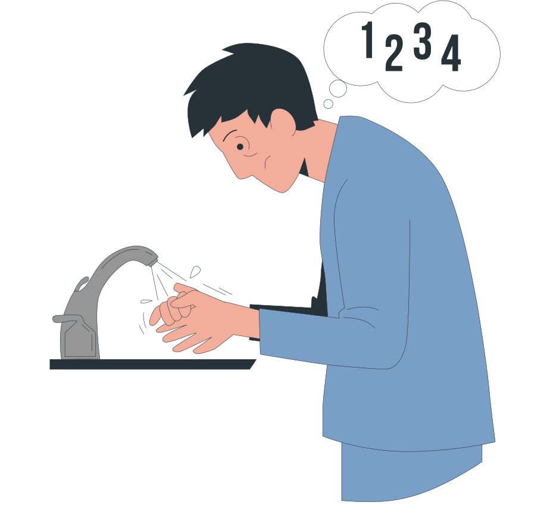
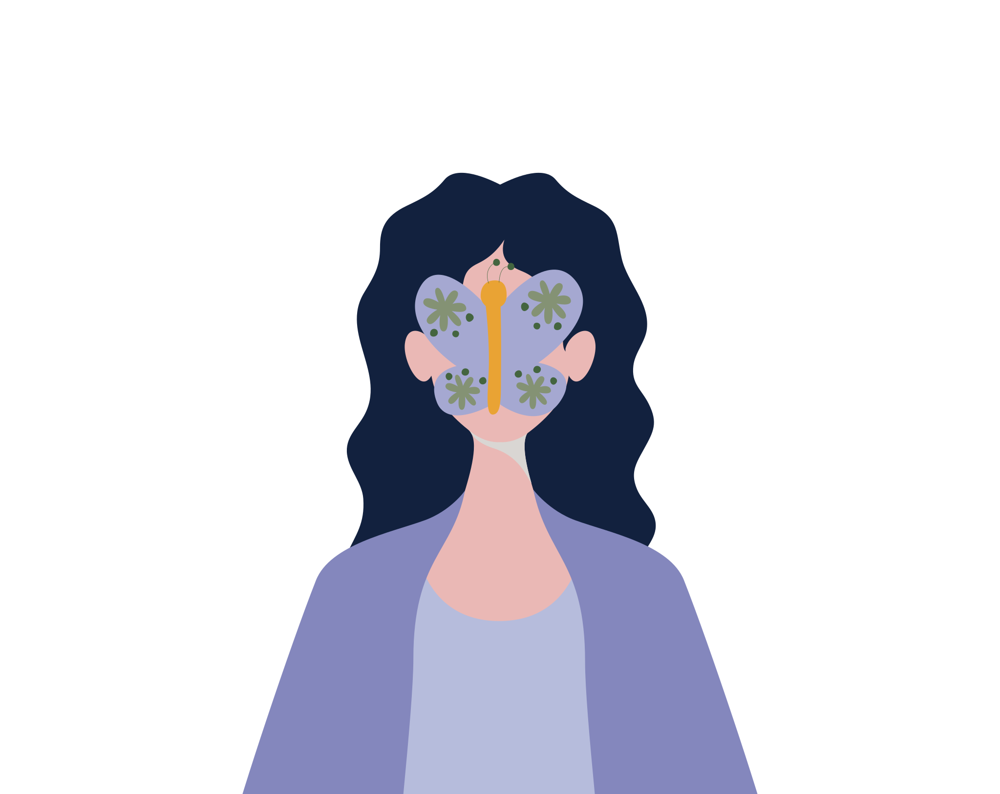

Psikoloji Testleri
Ücretsiz ve kolayca çözebileceğiniz psikolojik testler ile kendinizi test edin ve psikolojik sıkıntılarınızın düzeyi hakkında bilgi edinin.
Anksiyete (Kaygı) Testi
Yaygın Kaygı Bozukluğu 7 (GAD-7), yaygın anksiyete bozukluğunun taranması ve şiddetinin ölçülmesi için kullanılan bir psikoloji testidir. GAD-7, çeşitli yaygın anksiyete bozukluğu belirtilerinin şiddetini ölçen yedi maddeye sahiptir.
Depresyon Testi
Hasta Sağlık Anketi 9 (PHQ-9) depresyonun taranması ve şiddetinin ölçülmesi için kullanılan bir psikoloji testidir. Dokuz maddeyle hızlı ve kolay bir şekilde tarama yapan başarılı bir depresyon ölçeğidir.

Travmatik Yas Testi
Travmatik yas; ilişkimiz olan bir kişinin beklenmedik ve özellikle kötü bir olay sonucu vefat etmesiyle oluşan yas sürecine denir. Bu ölçek bahsi geçen travmatik yas tepkilerinin şiddetini değerlendirmektedir.
Travma Sonrası Stres Bozukluğu Testi
Travma Sonrası Stres Bozukluğu Envanteri - Sivil Versiyon, Türkiye'de yaşayan bireylerde Travma Sonrası Stres Bozukluğu tanı ve şiddet değerlendirmesinde rutin uygulama kapsamında kullanılabilmektedir.
Sosyal Kaygı Testi
Sosyal Etkileşim Kaygı Ölçeği, diğer insanlarla tanışırken ve konuşurken sıkıntı olarak tanımlanan sosyal etkileşim kaygısını ölçmektedir. Bu psikolojik test, sosyal anksiyete bozukluğuna dair fikir verir.

Alkol Bağımlılığı Testi
AUDIT (Alkol Kullanım Bozuklukları Tanımlama Testi), riskli veya tehlikeli tüketim veya herhangi bir alkol kullanım bozukluğu olarak tanımlanan sağlıksız alkol kullanımını taramanın basit ve etkili bir yöntemidir.
Stres Testi
DASS21, son 1 haftadır mevcut olan stres belirtilerini ölçen 7 maddeyi içeren bir araçtır.
Öfke Testi
Sürekli öfke, durumsal öfkenin genelde ne sıklıkta yaşandığını anlatan bir kavramdır. Sürekli Öfke ve Öfke Tarzı Ölçeği Testi ya da Öfke Testi bu durumsal öfkenin yaşanma sıklığını ve öfkenin çeşitli boyutlarını ölçmek amacıyla kullanılmaktadır.
Öz Güven Testi
33 sorudan oluşan Öz Güven testi bireylerin kendilerine olan güvenlerinin seviyesini ölçmek için kullanılan bir psikoloji testidir.
Fobi Testi
Özgül fobi testi herhangi bir konudaki (yükseklik, kapalı alan, hayvanlar, durumlar) fobinizin şiddetini ölçebilir ve bilimsel sonuçlar alabilirsiniz.

Dikkat Dağınıklığı (Eksikliği) Testi
Yetişkinler İçin Dikkat Dağınıklığı Testi, yetişkinler için dikkat eksikliği belirtilerinin değerlendirildiği 24 soruluk bir psikoloji ölçeğidir.

Obsesif Kompulsif Bozukluk Testi
Maudsley Obsesif Kompulsif Bozukluk Testi, Obsesyon (takıntı) ve kompulsiyonların yani takıntıların yarattığı kaygıyı gidermek için uygulanan davranışların belirti düzeylerini ölçen 37 soruluk bir psikoloji testidir.
Borderline (Sınırda) Kişilik Bozukluğu Testi
Borderline Kişilik Bozukluğu Testi, sınırda kişilik belirtlerini ölçen 51 maddelik bir envanterdir. Sorular doğru-yanlış seçenekleriyle yanıtlanır. Envanterden alınan puanın artması, borderline kişilik özelliklerindeki artışa işaret eder.

Aleksitimi (Duygu Körlüğü) Testi
Duygu Körlüğü ya da Aleksitimi testi, kişinin kendi duyguları anlama, tanımlama veya ifade etme seviyesini ve duyguları anlamakta bir eksiklik yaşayıp yaşamadığını ölçmektedir.